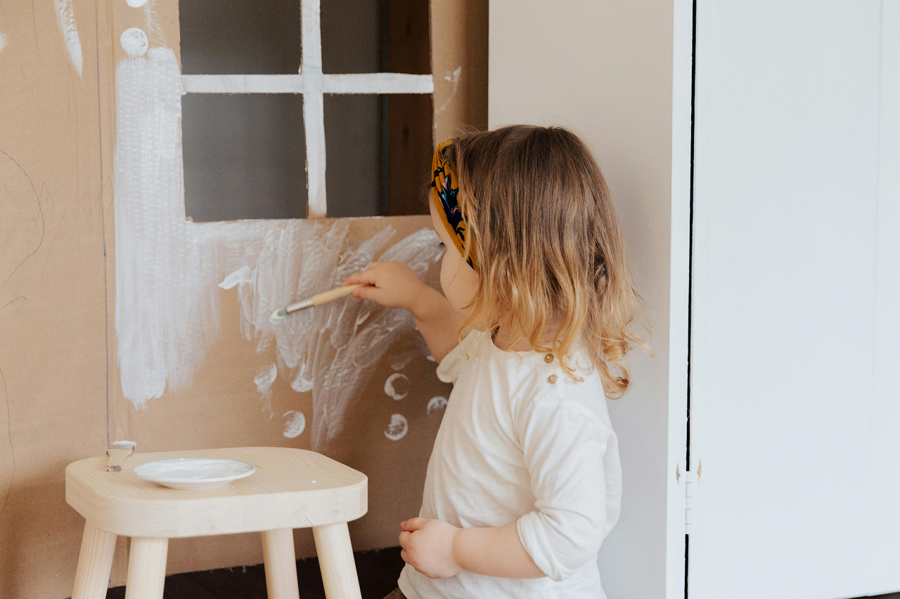

Умение понимать и называть свои эмоции — один из самых важных навыков для ребенка. Именно он помогает детям чувствовать себя увереннее, безопаснее и легче справляться со сложными жизненными ситуациями.
Многим взрослым это тоже дается непросто. Нас редко учили замечать свои чувства, говорить о них открыто и экологично проживать сложные состояния. Иногда эмоции вызывают стыд, тревогу или желание их подавить. Но этому можно научиться — и помочь своему ребенку сделать это намного раньше.
Начните с самого важного — спокойного присутствия рядом с ребенком. Постарайтесь внимательно выслушать его, не перебивая и не обесценивая переживания.
Когда ребенок получает возможность рассказать о своих чувствах, он начинает постепенно успокаиваться. Эмоции, которые удалось выразить словами, становятся менее пугающими.
Но иногда ребенку сложно понять, что именно он чувствует. Родители видят только последствия: слезы, раздражение, крик, тревогу или замкнутость. В такие моменты особенно помогают простые визуальные методы.
Точечный метод помогает ребенку определить силу своих эмоций даже тогда, когда подобрать слова трудно.
Нарисуйте на листе бумаги несколько точек — от самой маленькой до самой большой. Предложите ребенку выбрать ту точку, которая больше всего похожа на его чувство сейчас.
Ребенок может просто показать нужную точку пальцем. Лучше использовать большой лист бумаги — например, формат А4 — или даже сделать отдельный плакат и повесить его на стену.
Такой способ помогает ребенку замечать и осознавать свои эмоции, а также понимать, что чувства могут меняться по интенсивности.
Точечный метод подходит не только для сложных эмоций. Его можно использовать и для радости, интереса, спокойствия или восторга.
Для удобства каждой эмоции можно дать свой цвет и сделать отдельный лист. Это помогает ребенку быстрее различать свои внутренние состояния.
Например, если ребенок говорит, что чувствует радость и показывает среднюю точку, можно предложить ему «увеличить» это чувство — медленно провести пальцем к самой большой точке и почувствовать радость сильнее.
Когда эмоция переносится во внешний образ — точку, цвет или рисунок — ребенку становится легче справляться с переживаниями.
Он как будто получает возможность посмотреть на ситуацию немного со стороны. Благодаря этому снижается внутреннее напряжение и появляется пространство для успокоения.
Именно такие простые навыки постепенно формируют эмоциональную устойчивость, доверие к себе и ощущение внутренней безопасности.